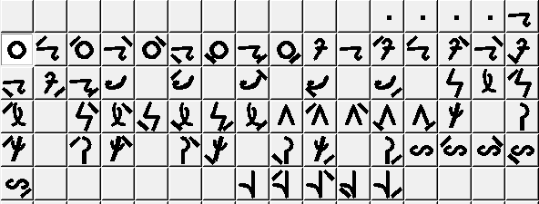
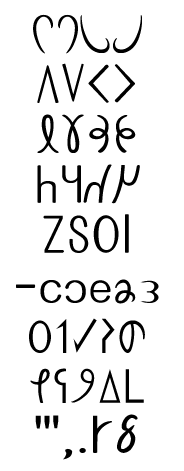
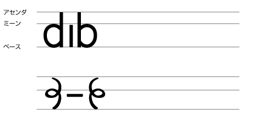

Sitemap
Contents Menu
もどる
キャラ紹介
ごあいさつ
幻字
語順
過去・進行・完了
副詞
繋辞（be動詞）
疑問文・否定文
命令・依頼・禁止
代名詞
格詞（前置詞）
関係詞
アクセントと方言
数字
接続詞・純詞
死生動詞・おわりに
幻字の発展
幻字は2001年の制アルカ作成時に幼字を元に作られた。 一番最初の形は通称「心電図」という幼字を筆記体に崩したもの。 まったく美しくなく書きづらいため、メルによる実験にて廃案となった。 次にできたのが幻字の原型で、子音の周りに母音を線で表現したもの。 この時点ではプロトタイプ制アルカ。 http://cid-dd6eff55a81cbf67.photos.live.com/self.aspx/arka/kaji.png  その後過合理を排他した夕月書体ができる。 http://cid-dd6eff55a81cbf67.photos.live.com/self.aspx/arka/arkantiselen.gif  ところが夕月は読みにくくデザインも良くなかったため、2010年に幻京書体ができる。 人間の視線はミーンラインからベースラインの間にある。字がこの幅に収まっていると読みやすく感じる。 下段の古い文字だと、yやtやnのところで視線が上に動いてしまい、可読性が悪い。上段は綺麗に収まっている。 http://cid-dd6eff55a81cbf67.photos.live.com/self.aspx/arka/hacmnod.png arbazard。下段はミーンからベースの間にほとんど何も収まっていないのが分かる。上段はそういったパラつきがない。可読性とデザイン上の美しさに圧倒的な違いがある。 下段はrが斜めなのにzはまっすぐになってる点も気になる。スタイルが統一されていない。 さらに下段は手書きのような雑な感じがする。 また、上段のほうが短くて省エネである。それでも詰まった印象はなく、むしろ読みやすくなっている。 http://cid-dd6eff55a81cbf67.photos.live.com/self.aspx/arka/hacmnod2.png なぜ新しいほうはアルファベットと同じ字形が増えたのか。 「早く書ける」「手首が楽」「他の文字と区別できる」「デザインが綺麗」を求めると字形は限られる。 アルファベットやギリシャ文字も同じように楽で綺麗な文字を使いたいので、自然と重複するものが出てくる。 ここでparとbelの夕月書体を見てみよう。 ミーンとベースの間に中途半端に丸が入っているから綺麗に見えない。 上段のように丸がきちんとミーンとベースの間に収まっているほうが見やすい。 http://cid-dd6eff55a81cbf67.photos.live.com/self.aspx/arka/hacmnod3.png  上段のparやbelは縦棒が途中で切れている。yのようにベースの下まで縦棒を伸ばす方法もあるはずなのにである。 それは文字が大きくなりすぎて、他の文字とのバランスが悪いためである。特にaと比べると如実である。 そこで新しい書体では縦棒を省略した。その結果、belはアルファベットのbのようになった。 縦棒の上を省略すればp形に、下を省略すればb形に。いずれにせよアルファベットに同じ形がある。 このように、歴史を知れば幻字はアルファベットと違う文字だと分かる。 ---- ・なぜblenzelはそのまま幻字でblenzelか 幻京においてアルファベットと同じ音と形のものはn,b,h,y,z,l,eの７種。 形だけ同じものはv,f,m,p,j,w,iの７種なので、前者が特に多いわけではない。 アルファベットと音も形も違うものは残り１１種で、このタイプが最も多い。 夕月ではn,b,h,y,z,l,eのうちn,bは別の形をしている。 元々幻字はh,y,z,l,eの５字が音まで重複していた。 ではこの重複はなぜ起こったか。 夕月を作った際、頻度の高い音に単純で書きやすい字形を当てた。 なお、この頻度というのは制アルカ作成時の予想であり、幻字の配列――例えばaioeu――などに現れている。 母音の場合、a,i,o,e,uの順である。ちょうど４番目が「エ」の音になるのでアルファベットと一致した。従ってアルファベットとは一切関係がない。 同様に子音ではlが最も頻度が高いだろうと当時は予想され、単純な縦棒を宛てがった結果、アルファベットと一致した。なお、lは字形が特殊なので子音の最後に置いた。 残る３字についても同様である。 nが幻京でアルファベットと同じになったのは斜線をなるべく廃して角張った文字と丸っこい文字が混在しないようにした結果である。 旧bは丸部分がミーンとベースの間（Xハイト）に収まらない。無理に収めると今度はアセンダからディセンダまで貫く不恰好な形になる。そこで縦棒を短くした。アルファベットとは関係がない幻字独自の発達である。 幻字はアプリオリな文字だが、合理的で簡単な字形は限られているのでアルファベットと同じものを持つ運命にある。そのため読者がアプリオリだと認知しづらく、このような歴史的説明が必要となる。 かといってアプリオリをアピールするためにわざとアルファベットにない字形を選ぶのはかえって不自然である。異世界の言語なのでアルファベットを意識してしまってはおかしいためである。